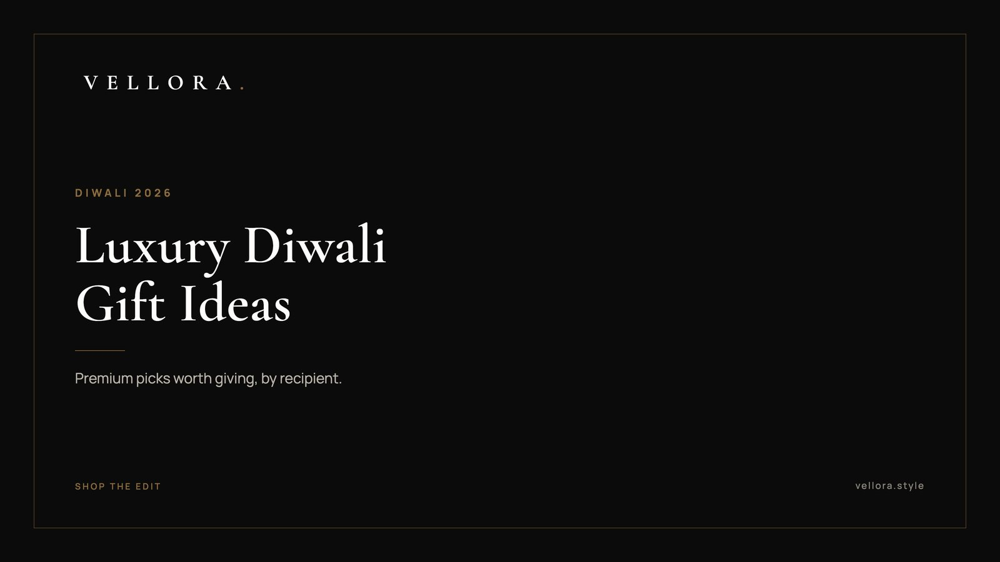

THE DIWALI EDIT
Luxury Diwali Gift Ideas 2026: Premium Picks Worth Giving
By Vansh Shah, Founder

- Start with the person, then the category. A watch suits a parent or a senior client. A bag suits almost anyone who goes out.
- One good object beats a crowded box. Diwali gifting rewards restraint.
- Our 25 picks are grouped for family, friends, clients and couples, with the pieces we carry named plainly.
- Diwali falls on Sunday 8 November 2026, with Dhanteras on Friday 6 November. Shop early in the month.
- Present it simply. A clean box and a handwritten line do more than heavy wrapping.
- What to gift on Diwali: how we choose
- Diwali gift ideas for family
- Diwali gift ideas for friends
- Diwali gift ideas for clients and colleagues
- Diwali gift ideas for couples
- Quick match: who gets what
- Timing your Diwali gifting in 2026
- Gifts we would skip
- How to present a premium Diwali gift
- How we put this edit together
The best Diwali gift ideas are personal, useful and quiet. Think of a dress watch for a parent, a structured bag for a sister, clean leather sneakers for a brother, a travel-ready watch for a client. Good Diwali gift ideas suit the person first and the festival second. Choose one considered piece, wrap it simply and add a note.
Below are 25 Diwali gift ideas sorted by recipient: family, friends, clients and couples. Each pick is a piece we carry or a generic style, and we say which. Treat it as our Diwali gift ideas 2026 shortlist.
What to gift on Diwali: how we choose
The question of what to gift on Diwali usually starts with a budget and a list of names. We start somewhere else. Who is this person on a normal Tuesday? What do they wear, carry and check without thinking? A gift that fits that routine gets used. A gift that only fits the festival goes into a cupboard.
A few rules we hold to across this edit:
- One piece, chosen well, reads as more generous than five pieces chosen fast.
- Restraint travels. A plain dial or a neutral leather suits more people than a loud logo.
- Daily use is the test. The best premium Diwali gifts are the ones a person reaches for every week.
We also keep the language plain. Where we name a brand, it is only to say what the piece is. You can browse the full Vellora edit alongside this list.
Diwali gift ideas for family
Family gifting carries the most weight and the most history. These seven picks lean toward pieces that last and suit a daily routine.
1. A gold dress watch for your father
The Day-Date 40, reference 228238 is an Oyster case, 40 mm, in yellow gold. As the name says, it shows the day and the date. It suits a father who wears one watch for everything.
2. An everyday tote for your mother
The Louis Vuitton OnTheGo MM (M45495) is a roomy tote for someone who carries her day with her. It works for errands, office and the festive week of visits.
3. A quilted chain bag for your sister
The Gucci Ivory Quilted Chain Shoulder Bag is soft, light in color and easy to dress up. It goes from a puja in the evening to dinner after without a change.

4. Clean leather sneakers for your brother
The LV Trainer Sneaker in Blue (1AJTQK) is a low-top for the brother who lives in sneakers. It dresses down a kurta and works with denim the rest of the year.
5. A heritage dress watch for your father-in-law
The 1908, reference 52508, is 39 mm in 18 ct yellow gold with a polished finish. It suits a man who prefers a slim, classic watch under a shirt cuff.
6. A mini top-handle bag for your daughter
The Dior Pink Mini Bag is small, structured and easy to carry to a first office Diwali party. Pink keeps it light without feeling young.
7. A slim leather cardholder for in-laws
A generic style, and a safe one. A slim cardholder in grained leather suits anyone who carries little and dislikes a bulky wallet. Neutral tones age best.
Diwali gift ideas for friends
Friends are where you can take a small risk on taste. These six are the unique Diwali gift ideas on this list: a little more personality, still easy to use.
8. A round crossbody for the friend who is always out
The Gucci Round GG Crossbody comes in ivory, silver and black. It holds a phone, keys and a lipstick, and leaves both hands free during the busiest week of the year.

9. A sculptural top-handle bag for the friend with strong taste
The Jacquemus Top Handle Handbag has a looped handle and comes in a long run of colors, from black and tan to snake print and burgundy. Pick the one that matches her wardrobe, not yours.
10. A colorful crossbody for a cheerful friend
The Kate Spade Buckle Flap Crossbody comes in pink, orange, light green, black and white. It brings color to a festive outfit and still works on a weekday.
11. A solar sports watch for the friend who hates battery swaps
The Seiko Prospex Circuit Race Solar (SSC941P1) runs on light, so it keeps going without a battery change. It suits a friend who wants something sporty and low fuss.
12. Sneakers in a second colorway
The LV Trainer Sneaker in Marine is the deeper blue option. It suits a friend who already owns white sneakers and wants something with a little more depth.
13. An evening shoulder bag for party season
The Kate Spade Chain Shoulder Bag comes in Pink Embellished and Brown Quilted. The embellished version suits Diwali parties. The quilted one suits the rest of the year.
Diwali gift ideas for clients and colleagues
Business gifting needs more restraint, not less. The gift says something about you, so keep it clean and useful. Our wider thinking on this sits in our guide to luxury corporate gifts in India.
14. A GMT watch for the client who travels
The GMT-Master II, reference 126710GRNR, is an Oyster case, 40 mm, in Oystersteel. A GMT watch has an extra hand that tracks a second time zone on a 24-hour scale. That makes it a natural gift for someone who works across cities.
15. A solar sports watch for a senior partner
The Seiko Prospex Speedtimer Go Large Solar (SSC915P1) is a larger, sporty piece that runs on light. It suits a partner who prefers a sports watch to a dress watch.
16. A structured top-handle bag for a senior client
The Louis Vuitton Vendome PM (M27040) is a structured top-handle bag that reads as formal. It suits a client who goes from meetings to dinners in the same week.
17. A top-handle satchel for a younger colleague
The Kate Spade Top Handle Satchel comes in red and black. Black is the safer office pick. Red is a quiet nod to the festival.
18. A leather passport holder for the frequent flyer
A generic style. A passport holder in smooth or grained leather is used on every trip and never feels like a token. Keep any personalization to initials.
19. One small leather good for a wider team
For a larger group, a cardholder or a key pouch scales well without losing quality. One good object per person beats a branded mug every time.
Diwali gift ideas for couples
Couples are easier than they look. Give to the household, or give two pieces that sit well together.
20. A small structured bag for the partner who travels light
The Louis Vuitton Petit Palais (M58914) is a compact, structured bag that holds its shape. It suits a partner who wants something small for evenings out.
21. A camera bag for the couple who are always on a trip
The Gucci GG Horsebit Camera Bag in beige and brown is compact and easy to wear across the body. It works on a flight, in a market and at dinner.
22. A navy flap bag for evenings
The Dior Monogram Flap Bag in navy is darker and more formal. It suits a partner who dresses for the evening and likes a deep color over black.
23. Two watches that suit each other
A generic idea we like. Pair a gold-tone dress watch for one with a steel sports watch for the other. They do not need to match. They only need to look right on the same table. Browse the watch edit for both.
24. A bright top-handle bag for a newly married partner
The Jacquemus Flap Handbag comes in pink, red, brown and ivory. Red or pink suits a first Diwali together. Ivory suits the rest of the year.
25. One shared object for the home
A generic style. A pair of solid brass lamps or a hand-thrown bowl for the entrance is a gift for the whole house. Choose weight and finish over ornament.

Quick match: who gets what
If you have a list of names and little time, use this table as a starting grid. The right answer still bends toward the person.
| Recipient | Category to consider | A piece we carry | Why it works |
|---|---|---|---|
| Father or father-in-law | Gold dress watch | Day-Date 40 or the 1908 | Worn daily, suits a shirt cuff |
| Mother | Everyday tote | Louis Vuitton OnTheGo MM | Holds a full day |
| Sister or daughter | Small structured bag | Dior Pink Mini Bag | Easy for festive evenings |
| Brother | Leather sneakers | LV Trainer Sneaker in Blue | Works with denim and kurtas |
| Close friend | Crossbody | Gucci Round GG Crossbody | Hands free, festive week ready |
| Client who travels | GMT watch | GMT-Master II | Tracks a second time zone |
| Senior partner | Solar sports watch | Seiko Prospex Speedtimer Go Large Solar | Runs on light, low fuss |
| Couple | Two pieces that pair | A dress watch and a sports watch | Shared, not matching |
Timing your Diwali gifting in 2026
Diwali falls on Sunday 8 November 2026. Dhanteras comes two days earlier, on Friday 6 November, and many families buy something new that day. Bhai Dooj follows two days after Diwali. Confirm the exact date for your city, since local calendars can differ.
October fills up before you notice. Navratri begins in mid-October, Dussehra is on Tuesday 20 October and Karwa Chauth is on Thursday 29 October. If you are buying for a wife or partner around that fast, our Karwa Chauth gift guide for your wife covers handbags in more depth.
Our advice is simple. Shortlist in the first half of October. Buy before the last week. Leave room for a size check or a color change. Use this as your Diwali gifting guide for the month and the last-minute rush mostly goes away.
Gifts we would skip
Some gifts look generous in the shop and go unused at home. We steer people away from a few:
- Trend pieces bought for the photo. If it will look dated by spring, pick the plainer version.
- Sizes you are guessing. Sneakers and watch straps need a real size. If you are unsure, choose a bag.
- Heavy personalization. A full name across a leather piece makes it harder to love. Initials are enough.
- The same item for everyone. It is efficient, and it reads that way.
When in doubt, pick the version of the piece you would keep for yourself. That instinct is usually right.
How to present a premium Diwali gift
The object matters, but so does the moment it arrives. A few notes:
- Keep the box clean. A plain box and a fabric ribbon suit a quiet gift.
- Write one line by hand. Name the person and the occasion. Skip the long message.
- Leave the logo out of the wrapping. The piece will speak for itself.
- If it is a watch or a bag, keep the original packaging inside. Most people like to store it that way.
How we put this edit together
We keep the edit small on purpose. Each piece is chosen for how it wears in real life, and we list it by name and, where it has one, its reference. We use brand names like Seiko, Louis Vuitton, Gucci, Dior, Kate Spade and Jacquemus only to say what a product is, never to suggest any link with those houses.
That is also why these Diwali gift ideas avoid big claims. We would rather show you the piece, tell you what it is and let you decide. You can see more in the bag edit, or read across the rest of our journal at your own pace.
We, the Vellora team, hope one of these finds its way to the right person this year.